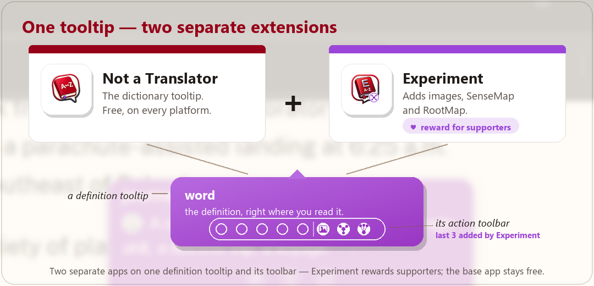
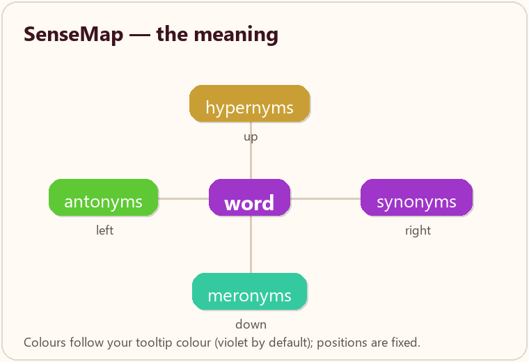
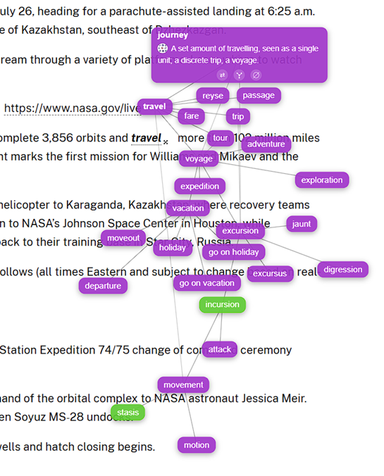
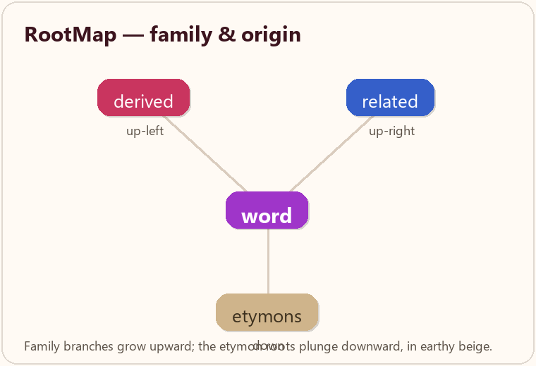
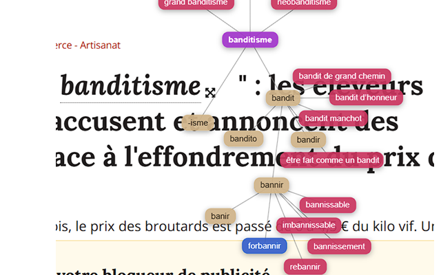

Timezone conversion
Timezone conversion stays in the same gesture.
A time selection can open a dedicated conversion tooltip instead of forcing a separate workflow or a different tool.
Read first. Translate later.
Not A Translator injects lightweight tooltips (noun) floating definition boxes that stay close to the selection and can rotate around it to escape edges and overlap. near your selection, keep the original-language definition front and center, and hide a lot of technical work behind a very simple gesture.
In context
A desktop Firefox view and a mobile Safari development view help make that concrete.


Why it feels different
The site now makes that philosophy explicit instead of hiding it between technical notes.
Core features
The visible interaction is tiny. The invisible machinery is not.
Timezone conversion
A time selection can open a dedicated conversion tooltip instead of forcing a separate workflow or a different tool.
Recent improvements
The landing page now describes the current state of the project instead of an older snapshot.
Under the hood
The extension is intentionally light in appearance and busy in the background.
Usage
The extension tries hard not to interrupt reading.
Experiment is a separate extension you install alongside Not a Translator. Once both are present, Experiment plugs into the very same definition tooltip and adds three things when they make sense: an illustrative picture, a graph of meanings (SenseMap), and a graph of a word's family and origin (RootMap). It is offered as a thank-you to the people who support the project.

For a plant, an animal, an object or a place, Experiment can show an illustrative photo right next to the definition — sourced from open image libraries, never a distraction you did not ask for.
A small, draggable graph around the word: synonyms, antonyms, broader and narrower terms. Tap any node to read its definition, expand it, and keep exploring the semantic neighbourhood.
A sister graph for the word's family: derived words and relatives grow upward, while the etymons — the older forms it comes from — plunge downward like roots.
How to get it
Experiment is published as an unlisted extension: it does not appear in store searches. It is shared directly with people who support the project, so the extra features stay tied to the donations that keep everything free of ads and tracking.
Around the central word, each family of meaning has a fixed place and its own colour. The palette is a tetrad built from your tooltip colour (violet by default), so the map always matches your chosen theme.


RootMap reads vertically, like a tree. The word's family fans out above it; its origins sink below it. Derived and related words follow your tooltip colour, while the etymons keep a fixed earthy beige — the soil the roots reach into.


Both maps use the same engine: drag a node to move its branch, tap the star / tree icon on an open node to expand it, and use the double-arrow to swap between the quick Wiktionary definition and the full dictionary definition.
FAQ